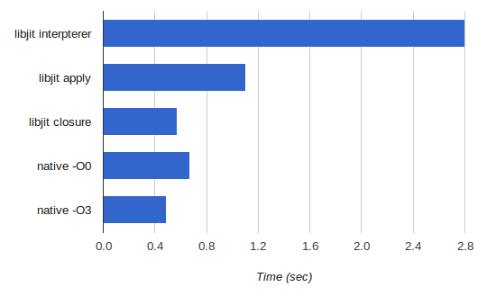

libjit is a very interesting project. It's a C library for generating executable machine code at runtime. As such, it can serve as a back-end of a JIT compiler. libjit was originally created as part of the larger DotGNU project (portable .NET runtime). Since DotGNU has been discontinued, libjit has fallen on and off into oblivion, but recently it's being maintained again.
libjit is not easy to get started with, and hence this series of articles. I spent a couple of days getting it to build and writing some simple programs using it, so I wanted to document this effort. libjit is one of those typical open-source projects in which the only real authority is the latest source code. Don't even look at the last "released" version - the code in Git is much more up-to-date. Similar for documentation: while the online docs are a pretty good place to get started, they are direly out of date when compared to the source code. That said, the project's source code is clean and well-documented C, so it's pretty easy to grok. Also, the tutorial part of the documentation is useful - make sure you go over it before reading this post; otherwise, it may be difficult to understand what libjit is about.
A few words on JITs
JITs have become very popular in the past decade or so due to their use in popular mainstream languages like Java, JavaScript and C#. However, the idea of recompiling a program at runtime is almost as old as programming itself [1]. Generating native machine code from higher-level bytecode at runtime is a concept many language designers have encountered in the past 50 years, and the problems/tradeoffs they ran into are comfortingly similar. In other words, it's an old and familiar problem.
While "a JIT" is usually thought about as part of some larger bytecode virtual machine (such as the JVM), it's a more general concept. I find the following way to think about this useful:
Whenever a program, while running, creates and runs some new executable code which was not part of the program when it was stored on disk, it's a JIT.
libjit fits this description well, since it's more general than the traditional VM association of JITs is (even though libjit was also originally conceived for the purpose of implementing a VM). True, libjit can be used to speed-up a VM by compiling bytecode to machine code at runtime. But it can be used for other things as well:
- Dynamic code generation from DSLs like regexes.
- Dynamic code generation for specialized data structures and algorithms.
- Implementing FFI (Foreign Function Interface) mechanisms for interfacing with native code.
As we'll see, libjit is very general, so the possibilities are only limited by the imagination.
The libjit API
[reminder: please go over the tutorial in the official docs of libjit before reading on]
I found the libjit API to be very well designed and intuitive. Once you spend some time with it, it becomes obvious how to do additional things without even looking them up. What follows is a short summary of how it works.
By means of its API calls, libjit builds an in-memory intermediate representation of a fairly low level bytecode. In formal terms, the IR is based on a three-address code [2]. This is somewhat similar to LLVM IR, although there are also important differences. For example, unlike LLVM, libjit does not have a serialized textual or binary representation of its IR - it only exists in memory.
Some of the most important data structures / objects in libjit are:
- jit_value_t: a generic value that serves as an argument to, and the potential return value from, libjit operations.
- jit_label_t: represents a jump target, just like in assembly languages.
- jit_function_t: represents a JIT-ed function that contains instructions and labels, can be compiled, run, etc.
JIT instructions are created by means of jit_insn_* calls. These calls accept the function object to add the instruction to, as well as potentially some values and/or labels. If the instruction returns a value, the API call will return a jit_value_t that represents it. Instructions are added to functions linearly - think of a function consisting of a sequence of instructions - each new jit_insn_* call appends one instruction to the end of that sequence.
Let's now get to a complete example that shows how these interact in practice.
Building libjit
First things first. I cloned the latest code from Git. libjit doesn't come with a configure script; rather, it needs to be generated with autotools using the provided auto_gen.sh script. I had to install libtool first, and a couple of other build dependencies:
$ sudo apt-get install libtool flex bison texinfo
After this, I could run ./auto_gen.sh followed by the usual configure-make sequence. make check can also be used to run the tests.
Linking with libjit
The libjit makefile creates both a static archive and a shared library, so you can choose whether you want to link libjit in statically or dynamically. Note that the library is quite large (a couple of MBs). Here's a portion of my makefile that compiles a program (gcd_iter.c, which we'll see soon) and links it successfully with libjit:
LIBJIT_PATH = $$HOME/test/libjit
LIBJIT_INCLUDE_PATH = $(LIBJIT_PATH)/include
LIBJIT_LIB_PATH = $(LIBJIT_PATH)/jit/.libs
LIBJIT_AR = $(LIBJIT_LIB_PATH)/libjit.a
CC = gcc
LD = gcc
CCOPT = -g -O0
CCFLAGS = -c $(CCOPT)
LDFLAGS = -lpthread -lm -ldl
gcd_iter: gcd_iter.o
$(LD) $^ $(LIBJIT_AR) $(LDFLAGS) -o $@
gcd_iter.o: gcd_iter.c
$(CC) -I$(LIBJIT_INCLUDE_PATH) -I. $(CCFLAGS) $^ -o $@
This is a completely generic "out of source" build. Your code can be located anywhere - all you need to supply is LIBJIT_PATH. It builds and links libjit statically.
Creating a simple program
The libjit tutorial has code for recursive GCD computation. Let's see how to write an iterative one, which contains a loop and somewhat more temporary value traffic. We'll build a JIT function that implements this algorithm:
int gcd_iter(int u, int v) {
int t;
while (v) {
t = u;
u = v;
v = t % v;
}
return u < 0 ? -u : u; /* abs(u) */
}
Here it is:
// Returns an uncompiled jit_function_t.
jit_function_t build_gcd_func(jit_context_t context) {
jit_context_build_start(context);
// Create function signature and object. int (*)(int, int)
jit_type_t params[2] = {jit_type_int, jit_type_int};
jit_type_t signature = jit_type_create_signature(
jit_abi_cdecl, jit_type_int, params, 2, 1);
jit_function_t F = jit_function_create(context, signature);
// u, v are function parameters; t is a temporary value.
jit_value_t u, v, t;
u = jit_value_get_param(F, 0);
v = jit_value_get_param(F, 1);
t = jit_value_create(F, jit_type_int);
// Create the while (v) condition with a label that allows to loop back.
//
// label_while:
// if (v == 0) goto label_after_while
// .. contents of while loop
//
// label_after_while is created as undefined at this point, so that
// instructions can have forward references to it. It will be placed later.
jit_label_t label_while = jit_label_undefined;
jit_label_t label_after_while = jit_label_undefined;
jit_value_t const0 = jit_value_create_nint_constant(F, jit_type_int, 0);
jit_insn_label(F, &label_while);
jit_value_t cmp_v_0 = jit_insn_eq(F, v, const0);
jit_insn_branch_if(F, cmp_v_0, &label_after_while);
// t = u
jit_insn_store(F, t, u);
// u = v
jit_insn_store(F, u, v);
// v = t % v
jit_value_t rem = jit_insn_rem(F, t, v);
jit_insn_store(F, v, rem);
// goto label_while
// label_after_while:
// ...
jit_insn_branch(F, &label_while);
jit_insn_label(F, &label_after_while);
// if (u >= 0) goto label_positive
// return -u
// label_pos:
// return u
jit_label_t label_positive = jit_label_undefined;
jit_value_t cmp_u_0 = jit_insn_ge(F, u, const0);
jit_insn_branch_if(F, cmp_u_0, &label_positive);
jit_value_t minus_u = jit_insn_neg(F, u);
jit_insn_return(F, minus_u);
jit_insn_label(F, &label_positive);
jit_insn_return(F, u);
jit_context_build_end(context);
return F;
}
The code should be quite readable now, but for extra points take a look at the reference documentation for the APIs used. Just a word of caution: the most up-to-date reference documentation for libjit is in code comments in the latests git snapshot.
Another note, on error reporting. libjit is, unfortunately, not very good at it. If you do something wrong, it will bite you. I've spent almost an hour chasing a bizarre stack-thrashing bug because t was not initialized with jit_value_create. I had initially written the code expecting jit_insn_store(F, t, u) to just do the right thing. It doesn't. And it doesn't tell you about it either. Initialize your jit_value_t variables!
Interpreted vs. compiled
As mentioned above, the libjit API defines an IR for describing programs. libjit has a built-in interpreter that can execute programs directly from this IR, without lowering further to machine code. This is used on architectures for which libjit doesn't yet have a backend. On architectures that do have a backend (like the x86-64 machine I'm working on), the default build sequence will only link the machine-specific backend in.
This can be changed by passing the --enable-interpreter flag to ./configure. The flag tells the configuration script to set up the interpreter as the backend, leaving the machine-specific code generators out. This can be useful for debugging libjit as well. We'll see some performance numbers for the interpreter later.
Running the JIT-ed code: apply vs. direct invocation
How do we run the GCD function built by build_gcd_func? The most straightforward way is using jit_function_apply:
jit_function_t gcd = build_gcd_func(context);
// Compile (JIT) the function to machine code
jit_context_build_start(context);
jit_function_compile(gcd);
jit_context_build_end(context);
// Run the function on argv input
int u = atoi(argv[1]);
int v = atoi(argv[2]);
void* args[2] = {&u, &v};
jit_int result;
jit_function_apply(gcd, args, &result);
jit_function_apply is a fully general method for invoking JIT-ed code from dynamic language runtimes. It makes no assumptions for the caller - the addresses of arguments are taken, and jit_function_apply uses the signature of the called function object to figure out how to provide these arguments to the actual function (w.r.t. calling convention, etc) [3]. It also provides the ability to compile the function on-demand, sets up libjit-specific exception handling, etc.
While great for dynamic language runtimes, when we just want to call JIT-ed code from a compiled C or C++ program, jit_function_apply carries needless overhead. Since the caller in this case almost certainly has the same calling convention (or, in other words, shares the ABI) it's wasteful to go through this general process - why not just get the pointer of the entry point of the JIT-ed code and invoke it directly?
This is exactly what the libjit closure [4] mechanism provides. Using a closure, the jit_function_apply call is replaced with this:
typedef int (*FF)(int, int);
FF gcd_f = jit_function_to_closure(gcd);
int result = gcd_f(u, v);
jit_function_to_closure returns the address of the entry point (the first instruction) of the JIT-ed code. To call it directly, we must tell the compiler (of the calling code) how to interpret the address, by specifying a function pointer type.
Performance
I ran the GCD computation on two large primes (which resulted in 17 iterations before returning 1), 5 million times in a loop, and compared the runtime of the various libjit run methods (interpreter, apply, closure) vs. the same function implemented in C and compiled natively with gcc -O0 or -O3:
Some thoughts on these results:
- The interpreter is indeed slow, but not as slow as I'd expect. I'm actually impressed that it provides reasonable performance, given how low-level the libjit IR is.
- The large difference between apply and closure is due to the short function runtime. Only 17 iterations of the GCD loop fly by quickly, but for jit_function_apply we pay the large overhead for switching from native to JIT-ed code on every call. If the function was longer-running, I'm sure that the difference between apply and closure would be smaller. Note also that the overhead is only paid when moving from native to JIT and back - calls bounded within the JIT-ed code are fast.
- It does not surprise me that libjit (with the closure call approach) beats gcc -O0. Keep in mind that gcc -O0 starts from C code, while for libjit we laid out a very low-level IR representation manually. So we've basically done all the compilation work and handed the results to execution. Still, some things (like register allocation and peephole optimizations) live below this level, which is why gcc -O3 managed to produce code that's 25% faster than libjit.
What's next
In future parts of this article I intend to look at the machine code generated by libjit, as well as explore its other features such as calls from JITed to native code. All the code for the article is free (public domain) and available in my libjit-samples Github repository.

| [1] | The paper "A brief history of Just-In-Time" by John Aycock states that the earliest signs for JIT ideas can be found in McCarthy's original LISP research from the early 1960s. It was just not called "JIT" those days - this term was coined for Java and taken from the world of manufacturing. |
| [2] | I originally quoted the DotGNU Wikipedia page which also said that libjit IR keeps variables in static single assignment (SSA) form. After discussing this with Aleksey Demakov, the current maintainer of libjit, I removed that part because libjit doesn't really use SSA. Store instructions may be used to assign different values to the same variable within a single basic block, and there are also no Phi nodes. In LLVM, on the other hand, all register values are kept in SSA form. |
| [3] | This is similar to how foreign function interfaces (FFI) work; for example, libffi. |
| [4] | Not the best usage for the term closure, IMHO, but I'll stick to it since this is the nomenclature in libjit's code and documentation. |